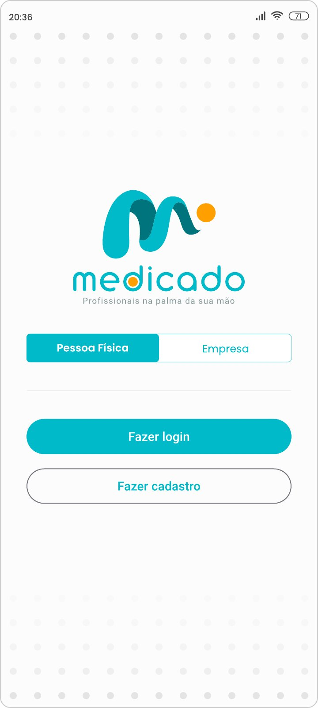
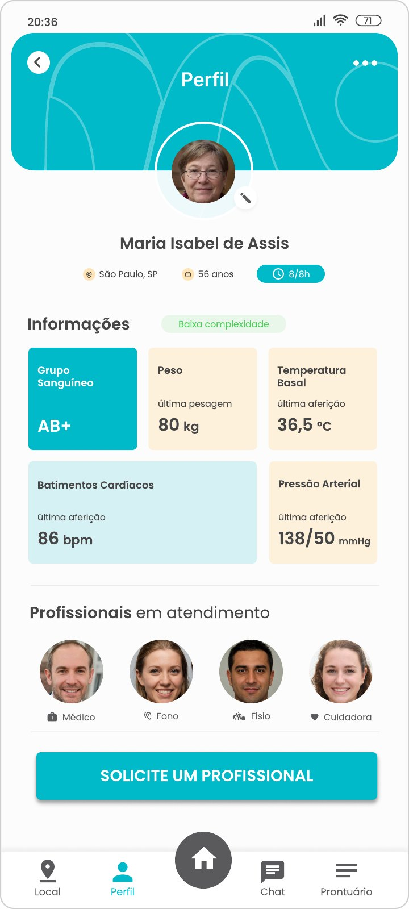
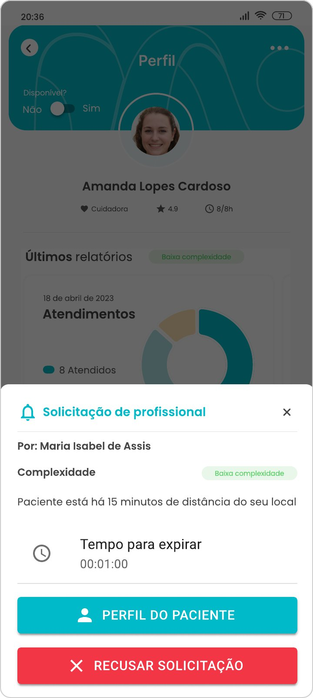

Case 05 · UX/UI Design · Product Discovery · Lean Inception
Medicado: home care na palma da mão
Um aplicativo que conecta pacientes, famílias e empresas de home care a profissionais de saúde. Facilitei a Lean Inception que definiu o MVP e desenhei a experiência do zero, das jornadas ao protótipo em alta fidelidade. O produto chegou ao mercado em 2026.



Visão geral
Entrei no time para organizar o projeto e entregar a visão do todo. Facilitei a Lean Inception com os dois sócios, conduzi a Matriz CSD, os objetivos de negócio, o É/Não é, as protopersonas, as funcionalidades e as jornadas, pesquisei concorrentes e referências e desenhei o aplicativo no Figma, com fluxos para quem pede o cuidado e para quem cuida.
5
dias de Lean Inception, facilitada por mim
9
jornadas de usuário mapeadas, do cadastro ao pagamento
172
telas em alta fidelidade no Figma
2026
produto no mercado, em Android e iOS
Contexto
O cuidado domiciliar envolve muita gente e pouca coordenação: a família que precisa de um profissional com urgência, o profissional que precisa saber o que vai encontrar na casa do paciente e a empresa de home care que precisa de gente qualificada disponível. A ideia do Medicado nasceu de quem conhece essa operação por dentro.
Dois segmentos
O paciente particular, que contrata direto pelo app, e as empresas de home care (convênio), que buscam profissionais para seus pacientes.
Três perfis
Paciente e família, profissional de saúde e administrador, cada um com a sua jornada e as suas permissões.
Problema
Havia know-how de sobra sobre a operação e nenhuma definição do que seria o produto, nem por onde começar.
- O conhecimento do negócio estava na cabeça de um dos sócios, em linguagem de enfermagem, e precisava virar escopo que o desenvolvimento conseguisse construir.
- Um produto de dois lados: se a família não confia no profissional, ou o profissional não sabe o que vai encontrar, o atendimento não acontece.
- Faltava um cronograma e um recorte de MVP que coubessem em um time de três pessoas.
Meu papel
O que eu conduzi
- Facilitação da Lean Inception, da agenda ao registro no FigJam.
- Matriz CSD, objetivos de negócio, É/Não é, protopersonas, funcionalidades e jornadas.
- Pesquisa de concorrentes e de referências de layout e design de tela.
- Organização do cronograma do projeto e da visão do todo.
- UI/UX de ponta a ponta no Figma: fluxos, telas, estados e protótipo.
O time
- Reinaldo, sócio e enfermeiro com anos de experiência em home care: especialista do negócio e da operação.
- Lucas, sócio e líder técnico: desenvolvimento de ponta a ponta.
- Eu, UX/UI Designer: facilitação, produto e experiência.
Em toda a minha trajetória, já facilitei mais de 15 Lean Inceptions.
Os dois lados
Eu também conheço o home care pelo lado da família.
Minha primeira filha recebeu cuidados domiciliares de enfermagem por mais de um ano. Essa vivência me trouxe para mais perto do produto: enquanto o sócio enfermeiro trazia a visão da operação, eu trazia a de quem recebe o profissional em casa. Decisões como saber quem vai chegar, acompanhar o trajeto e confirmar a entrada com um código refletem esse olhar.
Descoberta
Usei a Lean Inception como fio condutor do discovery, com a Matriz CSD para separar certezas, suposições e dúvidas antes de decidir qualquer funcionalidade. Selecione um dia para ver o que foi feito.
{{ day.n }} · manhã
{{ day.am }}
{{ day.n }} · tarde
{{ day.pm }}
O que saiu
{{ day.out }}
Definição do MVP
Objetivos de negócio
É
Plataforma de recrutamento para home care
Intermediador de solicitações de atendimento de saúde
Não é
Rede social
Agenda de consultas
Home care
Faz
Recruta profissionais por área de atuação
Oferece atendimento domiciliar e especializado
Acompanha a evolução clínica do paciente
Não faz
Agendamento autônomo
Venda de produtos
Protopersonas
- Helena, paciente particular
- Maria Luísa, paciente de convênio
- Pedro, técnico de enfermagem
- Empresa de home care (convênio)
Ficou para depois
- IA para apoiar a análise e a seleção do profissional.
- Entrega de medicamentos antes da chegada do profissional, prevista para uma 2ª versão.
- Jornadas de link dinâmico para empresas, riscadas do MVP durante a validação.
Solução
Cada jornada do discovery virou um fluxo no Figma, e cada fluxo responde a um objetivo de negócio. Navegue pelas jornadas e clique em uma tela para ampliar.
{{ flow.who }}
{{ flow.name }}
{{ flow.text }}
Objetivo atendido
{{ flow.goal }}
Complexidade antes de tudo
O cadastro classifica o paciente em baixa, média ou alta complexidade a partir dos cuidados de que ele precisa. Isso direciona o perfil de profissional e aparece em toda solicitação.
Código para entrar e sair
O check-in e o checkout dependem de um código informado pela família. A segurança do paciente vira um passo do fluxo, não uma promessa.
Tempo e distância visíveis
A solicitação mostra a que distância o paciente está e quanto tempo resta para aceitar. O trajeto aparece no mapa para os dois lados.
Estados que acolhem
Erro de conexão, recusa e cancelamento têm telas próprias, com linguagem clara sobre reembolso e próximo passo.
{{ zoom.title }}
Colaboração
Especialista do negócio
Reinaldo trouxe a experiência da operação, base para as regras de tipos de profissional, cuidados por complexidade, registro no COREN, prontuário e cobrança.
Líder técnico
Lucas participou da análise técnica das funcionalidades e construiu o produto de ponta a ponta.
Facilitação e design
Eu traduzi as duas visões em escopo, cronograma, jornadas e telas, com o olhar de quem já esteve do lado da família.
Resultado
Da ideia ao produto no mercado: o Medicado chegou às lojas em 2026, para Android e iOS.
- Um MVP com escopo explícito: o que o produto é, faz, não é e não faz, acordado entre negócio, tecnologia e design.
- Nove jornadas mapeadas e validadas com o time antes do desenho das telas, incluindo as que ficaram fora do MVP.
- 172 telas em alta fidelidade, com fluxos de paciente, profissional e empresa, estados de erro e de exceção.
Leitura honesta
As telas mostradas aqui são do projeto no Figma. A versão publicada evoluiu a partir desse MVP. Não apresento métricas de uso porque não tenho acesso a esses dados.
Aprendizados
Facilitar é traduzir
O valor da Lean Inception esteve em transformar a linguagem da enfermagem em decisões que o desenvolvimento podia construir.
O "não é" protege o MVP
Dizer que o app não é uma rede social nem uma agenda de consultas evitou funcionalidades que pareciam óbvias e não sustentavam o objetivo.
Confiança é fluxo
Em saúde, segurança não cabe em um selo: ela precisa estar nos passos, como o código de entrada e o trajeto visível.
Vivência é repertório
Ter estado do lado da família me deu perguntas que nenhuma pesquisa de mesa traria.